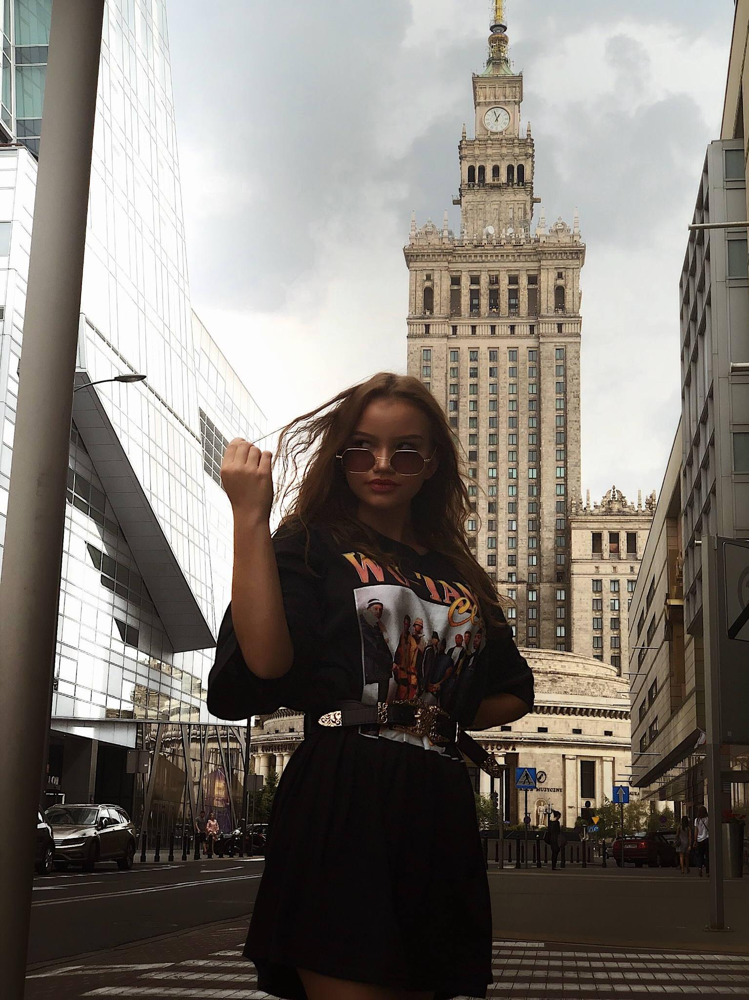

Zajawka
Zawsze bylem przekonany, ze zdjęcia które robią moi znajomi, ja mogę zrobić je lepiej. Póki co dopiero zaczynam swoja przygodę z fotografowaniem i nie robię tego za często, ale jeżeli przychodzi ta chwila to przykładam się do tego, próbuje rożnych perspektyw, łapać inaczej światło etc. Na chwile obecna moje portfolio nie jest zbyt duże, ale ciągle na tym pracuje, przy możliwości spędzenia wolnego czasu często chodzę ze swoja dziewczyna na tzw. sesje. W przyszłości tez fotografowanie mi się bardzo przyda wiec wszystko dobrze się składa. Mam do tego oko i z czasem będę na pewno nabywać doświadczenia
Po prawej stworzyłem malutka interaktywna galerie zdjęć które zrobiłem.
